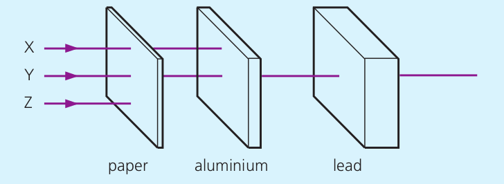

Individual silicon atoms on the surface of a silicon crystal observed using a scanning tunnelling microscope.
About $4 000 000 000$ atoms would fit into a length of $1$ metre.
10.1: Inside Atoms
10.1: Inside Atoms
10.1: Inside Atoms
### 10.1: Inside Atoms
* Atoms contain three basic particles – protons, neutrons and
electrons.
* A proton is a hydrogen atom minus an electron
* Its charge is equal in size but opposite to that of an electron
* Its mass is about 2000 times greater than the mass of an electron
* A neutron is uncharged with almost the same mass as a proton.
10.1: Inside Atoms
### 10.1: Inside Atoms
* An electrically neutral atom has equal negative charges and positive charges.
* An atom which loses or gains electrons has unbalanced positive and negative charges.
* An atom which loses electrons has more positive charges — it becomes a **positive ion**.
* An atom which gains electrons has more negative charges — it becomes a **negative ion**.
10.1: Inside Atoms
### 10.1: Inside Atoms
For positively charged protons to be packed close together in a nucleus without strongly repelling each other apart, they need to have a strong force on them to balance it out.
* We call this force the **strong nuclear force** and it attracts nucleons together
* The strong nuclear force is considered to be one of the four fundamental forces
10.1: Inside Atoms
The strong nuclear force acts between nucleons causing them to be packed closely together in the nucleus.
10.1: Inside Atoms
10.1: Inside Atoms
### 10.1: Inside Atoms
* The **atomic number** or **proton number** $Z$ of an atom is the number of protons in the nucleus.
* The proton number is also the number of electrons in the atom.
* The electrons determine the chemical properties of an atom and when the elements are arranged in order of atomic number in the Periodic Table, they fall into chemical families.
* The **mass number** or **nucleon number** $A$ of an atom is the number of nucleons in the nucleus.
* In general, the number of neutrons in the nucleus is $A – Z$.
### 10.1: Inside Atoms
* Atomic nuclei are represented by symbols.
* Hydrogen is written as $^{1}_{1}H$
* helium as $^{4}_{2}He$
* lithium as $^{7}_{3}Li$.
* In general atom $X$ is written in nuclide notation as $^{Z}_{A}X$ where $A$ is the nucleon number and $Z$ the proton number.
10.1: Inside Atoms
### 10.1: Inside Atoms
* Isotopes of an element are atoms that have the same number of protons but different numbers of neutrons.
* Isotopes have identical chemical properties
* they have slightly different physical properties because of the difference in mass.
* Few elements consist fully of identical atoms -- most are found as mixtures of isotopes.
### 10.1: Inside Atoms
* For example: Chlorine has two isotopes
* one has $17$ protons and $18$ neutrons and is written $^{35}_{17}Cl$
* the other has 17 protons and 20 neutrons and is written $^{37}_{17}Cl$
* They are present in ordinary chlorine in the ratio of three atoms of $^{35}\_{17}Cl$ to one atom of $^{37}\_{17}Cl$ giving chlorine an average atomic mass of $35.5$.
### 10.1: Inside Atoms
* Hydrogen has three isotopes: $^{1}\_{1}H$ with one proton, deuterium $^{1}\_{2}H$ with one proton and one neutron and tritium $^{1}\_{3}H$ with one proton and two neutrons.
* Ordinary hydrogen consists of $99.99 \\%$ $^{1}\_{1}H$ atoms.
* Water made from deuterium is called heavy water
* it has a density of $1.108\\; g/cm^3$, it freezes at $3.8^\circ C$
and boils at $101.4^\circ C$.
10.1: Inside Atoms
### 10.1: Inside Atoms
**Question:** Three stable isotopes of oxygen are $^{16}\_{8}O$,$^{17}\_{8}O$ and $^{18}\_{8}O$.
Give the number of protons, nucleons and neutrons in each isotope.
**Question:** Two isotopes of carbon are $^{12}\_{6}C$ and $^{14}\_{6}C$. Give the number of protons, nucleons and neutrons in each isotope.
### 10.1: Inside Atoms
* The stability of any nucleus depends on the balance between the strong nuclear force and the electric force.
* This balance depends on the ratio of the number of neutrons to the number of protons.
* The nuclei of nuclides with low proton numbers are stable if the number of neutrons is approximately equal to the number of protons
* for example $^{12}_{6}C$.
* As the proton number increases, greater numbers of neutrons are needed if the nucleus is to be stable.
* For example, $^{116}_{83}Sn$ is a stable nuclide.
* Elements with a proton number of 83 or greater have no stable isotopes.
10.1: Inside Atoms
The pattern of stability can be represented on a chart of the nuclides
10.1: Inside Atoms
### 10.2, 10.3: Nuclear Radiation
* The discovery of radioactivity in 1896 by the French scientist **Henri Becquerel** was accidental.
* Soon afterwards **Marie Curie** discovered the radioactive element radium.
* Radioactivity arises from the *decay of unstable nuclei*
* This is called **radioactive decay**
* These unstable nuclei may occur naturally or be produced in reactors
> The rate of radioactive decay is unaffected by chemical and physical properties, such as temperature.
> *It is a spontaneous and random process.*
10.2, 10.3: Nuclear Radiation
10.2, 10.3: Nuclear Radiation
Radium was used to treat any conditions where the patient seemed to need more energy.
An industry developed selling products such as radioactive water, toothpaste and face creams.
10.2, 10.3: Nuclear Radiation
Ionising radiation is radiation with high energies that can knock off electrons from atoms to form ions.
Very high frequency X-rays and gamma rays are examples of ionising electromagnetic radiation.
### 10.2, 10.3: Nuclear Radiation
* **Background radiation** is ionising nuclear radiation in the environment when no radioactive source is deliberately introduced.
* Sources of background radiation can be natural or artificial
* Even the air is slightly radioactive.
* It contains a radioactive gas called **radon**
* Radon comes up to the Earth’s surface from radioactive uranium rocks underground
10.2, 10.3: Nuclear Radiation
### 10.2, 10.3: Nuclear Radiation
* There are three principle types of nuclear radiation: alpha particles, beta particles and gamma rays.
* **Alpha particles** are a combination of two protons and two neutrons
* Alpha particles are the same as helium nuclei
* **Beta-negative particles** are very high-speed electrons
* **Gamma rays** are high-frequency electromagnetic radiation (photons).
* Gamma rays have no mass or charge.
* Example of alpha decay: $^{241}\_{94}\text{Am} \to ^{237}\_{92}\text{U} + ^{4}\_{2}\text{He} + \text{energy}$
* Example of beta decay: $^{14}\_{6}\text{C} \to ^{14}\_{7}\text{U} + ^{0}\_{-1}\text{e} + \text{energy}$
10.2, 10.3: Nuclear Radiation
### 10.2, 10.3: Nuclear Radiation
* Ionizing radiations will travel away from their source until they have transferred most or all of their energy in creating ions
* The penetrating power of radiation depends on its energy and how many ions it creates every centimetre.
* Gamma rays cause the *least ions per centimetre*
* They penetrate furthest and are not easily absorbed.
* They can travel very large distances in air without significant absorption
* It takes several centimeters of lead or concrete to block gamma rays
* Alpha particles create the *most ions per centimetre*
* They only travel a few centimetres in air.
* They are even absorbed by a thin sheet of paper.
10.2, 10.3: Nuclear Radiation
Alpha radiation is the most harmful but the alpha particles are stopped by the skin unless ingested
Beta and Gamma are therefore the potentially most harmful
10.2, 10.3: Nuclear Radiation
### 10.2, 10.3: Nuclear Radiation
* An intense dose of radiation causes a lot of ionisation in a cell, which can kill the cell.
* This is what happens when someone suffers radiation burns.
* If the DNA in the cell nucleus is damaged, the mechanisms that control the cell may break down.
* The cell may divide uncontrollably and a tumour forms.
* This is how radiation can cause cancer.
* If the affected cell is a gamete (a sperm or egg cell), the damaged DNA of its genes may be passed on to future generations.
* This is how radiation can produce genetic mutations.
* Occasionally, a mutation can be beneficial to the offspring, but more often it is harmful.
10.2, 10.3: Nuclear Radiation
The diagnosis of some diseases may be carried out using a source of γ-radiation.
The patient is injected with a radioactive chemical and a scanner is used to trace the path of the chemical.
The tracer technetium-99 is injected into the patient’s blood.
10.2, 10.3: Nuclear Radiation
The activity of a radioactive source is the rate at which its nuclei decay.
This can be monitored using a Geiger counter which measures the count rate, the number of emissions detected each second.
10.2, 10.3: Nuclear Radiation
When ionizing radiation enters a Geiger–Müller (GM)
tube, it creates argon ions and electrons.
These electrons are accelerated towards the electrodes and cause more ionisation by colliding
with other argon atoms.
On reaching the electrodes, the ions produce a very brief current
current which is fed to a ratemeter
A ratemeter gives the counts per second of these current pulses
10.2, 10.3: Nuclear Radiation
10.2, 10.3: Nuclear Radiation
10.2, 10.3: Nuclear Radiation
10.2, 10.3: Nuclear Radiation
10.2, 10.3: Nuclear Radiation
10.2, 10.3: Nuclear Radiation
### 10.4, 10.5: Radioactive Decay
**$\alpha$-particles**
* They cause intense ionisation in a gas due to frequent collisions with gas molecules.
* These have a range in air of only a few centimetres
* They are stopped by a thick sheet of paper
* Americium (**Am-241**) is a pure $\alpha$-particle source, used in smoke detectors.
* They are all emitted at a speed around $\frac{1}{20}$th of that of light.
### 10.4, 10.5: Radioactive Decay
**$\beta^-$-particles**
* Their ionising power is much less than that of $\alpha$-particles.
* They have a range in air of several metres.
* These are stopped by a few millimetres of aluminium
* Strontium (**Sr-90**) emits $\beta^-$-particles only.
### 10.4, 10.5: Radioactive Decay
**$\gamma$-emissions**
* These are the most penetrating and are stopped only by many centimetres of lead.
* They ionise a gas even less than $\beta^-$-particles and are not deflected by electric and magnetic fields.
* Cobalt (**Co-60**) emits $\gamma$-radiation and $\beta^-$-particles but can be covered with aluminium to provide pure $\gamma$-radiation.
10.4, 10.5: Radioactive Decay
$\alpha$-particles are deflected slightly by an electric field, $\beta$-particles are deflected a lot, and $\gamma$-particles are not deflected at all
10.4, 10.5: Radioactive Decay
These particles are also deflected by a magnetic field in a direction given by Fleming's ________________ hand rule
10.4, 10.5: Radioactive Decay

Identify the radiation emitted in Source 1, Source 2, Source 3
### 10.4, 10.5: Radioactive Decay
* Not all nuclei give out radiation. Some nuclei are unstable and give out radiation in order to become more stable. This process is known as **radioactive decay**.
* Some isotopes are unstable because the nucleus is too heavy. Other isotopes are unstable because they have too many neutrons.
> When the Earth formed, about 4500 million years ago, there were many more radioactive atoms around. This means that the level of background radiation used to be much higher than it is today. However, most radioactive atoms have decayed to become stable.
### 10.4, 10.5: Radioactive Decay
* An $\alpha$-particle is a helium nucleus, a particle having only two protons and two neutrons
* When an atom decays by emission of an $\alpha$-particle, its nucleon number decreases by 4 and its proton number by 2.
* For example, when radium $^{226}\_{88}\text{Ra}$ emits an $\alpha$-particle, it decays to radon $^{222}\_{86}\text{Rn}$
* $^{226}\_{88}\text{Ra} \to ^{222}\_{86}\text{Rn} + ^{4}\_{2}\alpha$
### 10.4, 10.5: Radioactive Decay
##### Examples of alpha decay
* $^{226}_{88}\text{Ra} \to ^{222}\_{86}\text{Rn*} + ^{4}\_{2}\alpha$
* $^{238}_{92}\text{U} \to ^{234}\_{90}\text{Th} + ^{4}\_{2}\alpha$
* $^{212}_{84}\text{Po} \to ^{208}\_{82}\text{Pb} + ^{4}\_{2}\alpha$
### 10.4, 10.5: Radioactive Decay
The equation for alpha decay is
> $^{A}_{Z}\text{X} \to ^{A-4}\_{Z-2}\text{Y} + ^{4}\_{2}\alpha$
* The values of A and Z must balance on both sides of the equation
* In $\alpha$-decay the number of nucleons in the nucleus is reduced and a heavy nucleus becomes lighter, tending to increase its stability.
### 10.4, 10.5: Radioactive Decay
* In $\beta^-$-decay a neutron changes to a proton and an electron.
* $\text{neutron} \to \text{proton} + \text{electron}$
* The proton remains in the nucleus and the electron is emitted as a $\beta^-$-particle.
* For example, carbon $^{14}\_{6}\text{C}$ decays by $\beta^-$-emission to nitrogen
* $^{14}\_{6}\text{C} \to ^{14}\_{7}\text{N} + ^{0}\_{-1}\text{e}$
* This is the decay that is used in radiocarbon dating. A carbon-14 nucleus decays
to become a nitrogen-14 nucleus.
* In $\beta^-$-decay a neutron turns into a proton and an electron so that the number of neutrons in the nucleus decreases; this increases the stability of a nucleus that has an excess of neutrons.
### 10.4, 10.5: Radioactive Decay
##### Examples of beta decay
* $^{14}\_{6}\text{C} \to ^{14}\_{7}\text{N} + ^{0}\_{-1}\text{e}$
* $^{234}\_{90}\text{Th} \to ^{234}\_{91}\text{Pa} + ^{0}\_{-1}\text{e}$
* $^{214}\_{82}\text{Pb} \to ^{214}\_{83}\text{Bi*} + ^{0}\_{-1}\text{e}$
* $^{40}\_{19}\text{K} \to ^{40}\_{20}\text{Ca} + ^{0}\_{-1}\text{e}$
### 10.4, 10.5: Radioactive Decay
The equation for beta decay is
> $^{A}_{Z}\text{X} \to ^{A}\_{Z+1}\text{Y} + ^{0}\_{-1}\text{e} + \text{an antineutrino}$
* In $\beta^-$-decay a neutron turns into a proton and an electron so that the number of neutrons in the nucleus decreases
* This increases the stability of a nucleus that has an excess of neutrons.
10.4, 10.5: Radioactive Decay
### 10.4, 10.5: Radioactive Decay
* After a nucleus emits an $\alpha$ or a $\beta$ particle, the nucleus may have excess energy.
* It releases this excess energy by emitting $\gamma$-rays.
* For example, when the lead nuclide $^{214}_{82}\text{Pb}$ decays, the resulting bismuth is left with excess energy.
* This excess energy is released as $\gamma$-emission.
* $^{214}\_{82}\text{Pb} \to ^{214}\_{83}\text{Bi*} + ^{0}\_{-1}\text{e}$
* $^{214}\_{83}\text{Bi*} \to ^{214}\_{83}\text{Bi} + \gamma$
### 10.4, 10.5: Radioactive Decay
**Examples of $\gamma$ decay**
* $^{214}\_{82}\text{Pb} \to ^{214}\_{83}\text{Bi} + ^{0}\_{-1}\text{e} + \gamma$
* $^{226}_{88}\text{Ra} \to ^{222}\_{86}\text{Rn} + ^{4}\_{2}\alpha + \gamma$
There are some rare artificial isotopes that emit only $\gamma$-rays, like the unstable **technetium-99m** (the m means 'metastable')
* $^{99m}\_{43}\text{Tc} \to ^{99}\_{43}\text{Tc}$
### 10.4, 10.5: Radioactive Decay
The equation for gamma decay is
> $^{A}_{Z}\text{X*} \to ^{A}\_{Z}\text{X} + \gamma$
* In $\gamma$ emission, the nuclide releases excess energy
* No change in atomic number or mass number
### 10.4, 10.5: Radioactive Decay
* The radioactive activity of a source decreases with time.
* As nuclei decay and become stable, there are fewer unstable nuclei, so there are fewer decays each second.
* The count rate and activity both decrease following the same pattern as the number of undecayed atoms.
* All radioactive substances decay with the same pattern
10.4, 10.5: Radioactive Decay
### 10.4, 10.5: Radioactive Decay
* The graph shows that the amount of a radioactive substance decreases
rapidly at first, and then more and more slowly.
* In fact, because the graph tails off more and more slowly, we cannot say when the last atoms will decay.
* Different radioactive substances decay at different rates, some much faster than others
* We cannot say when the substance will have entirely decayed. We have to think of another way of describing the rate of decay. As shown on the graph, we identify the **half-life** of the substance.
* The half-life of a radioactive isotope is the average time taken for half of the atoms in a sample to decay
* Half-lives can vary from a fraction of a second to thousands of years. Uranium decays slowly because it has a very long half-life.
* Some radioactive substances have half-lives that are less than a microsecond.
* fter one half-life, half of the atoms in a radioactive sample have decayed.
However, this does not mean that all of the atoms will have decayed after two
half-lives.